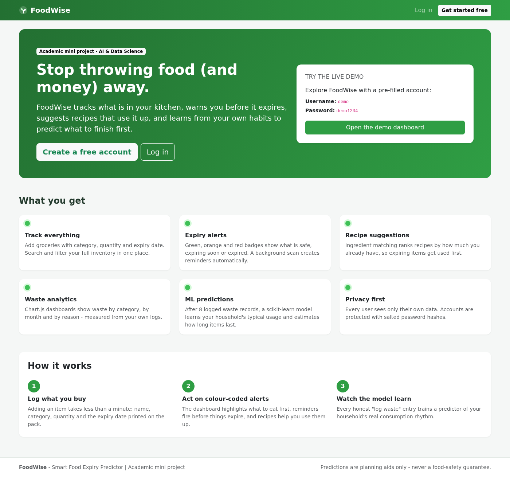
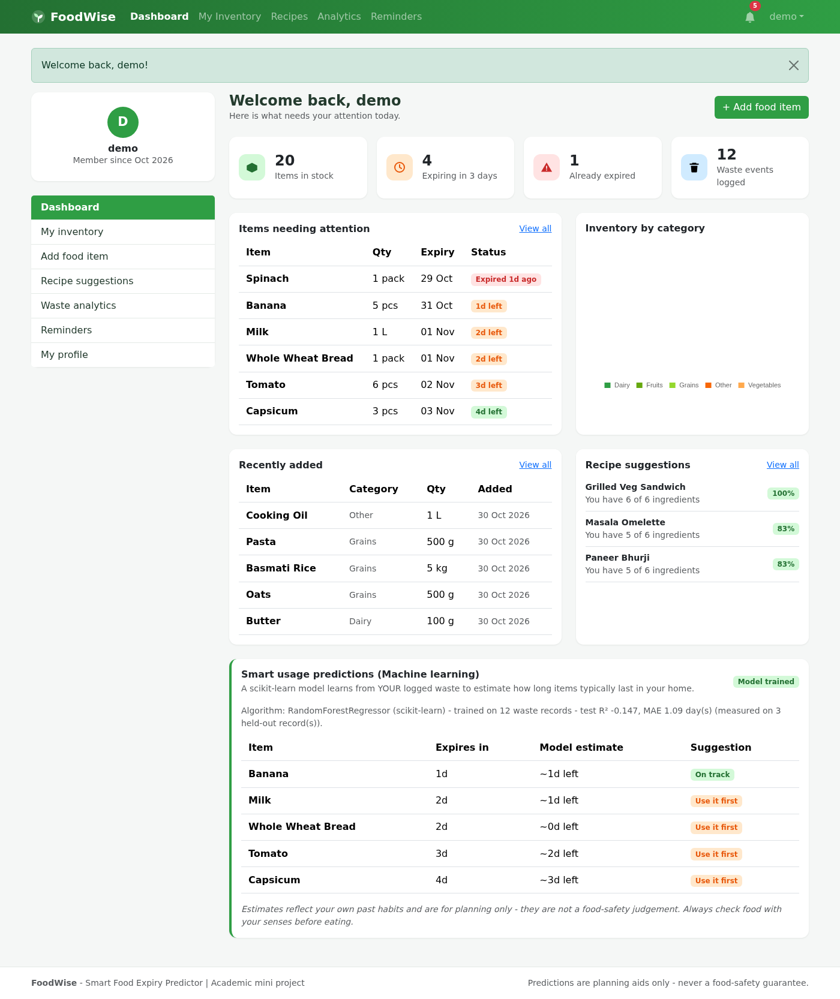
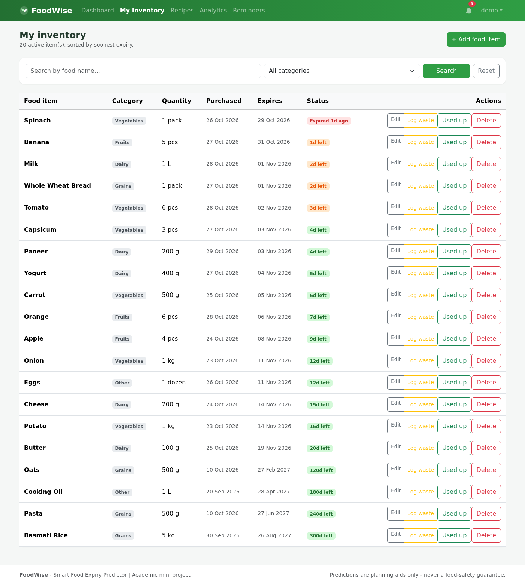
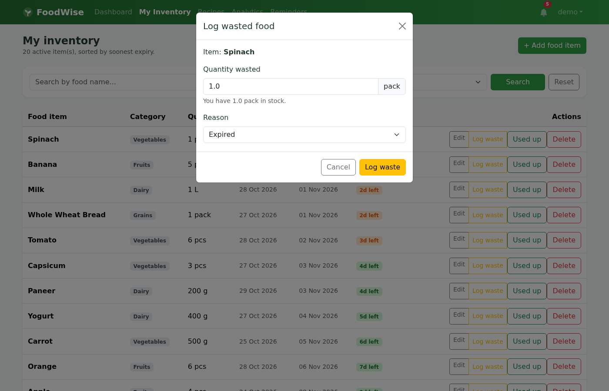
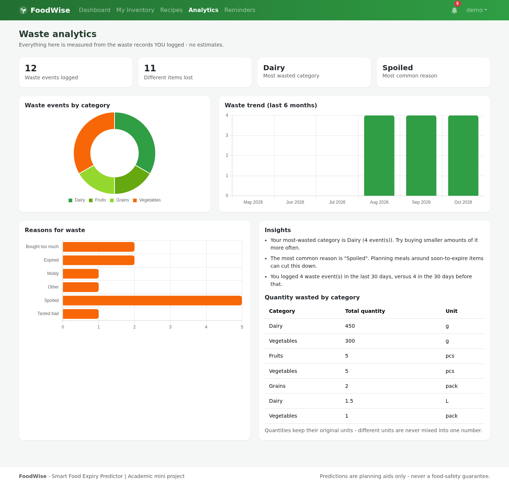
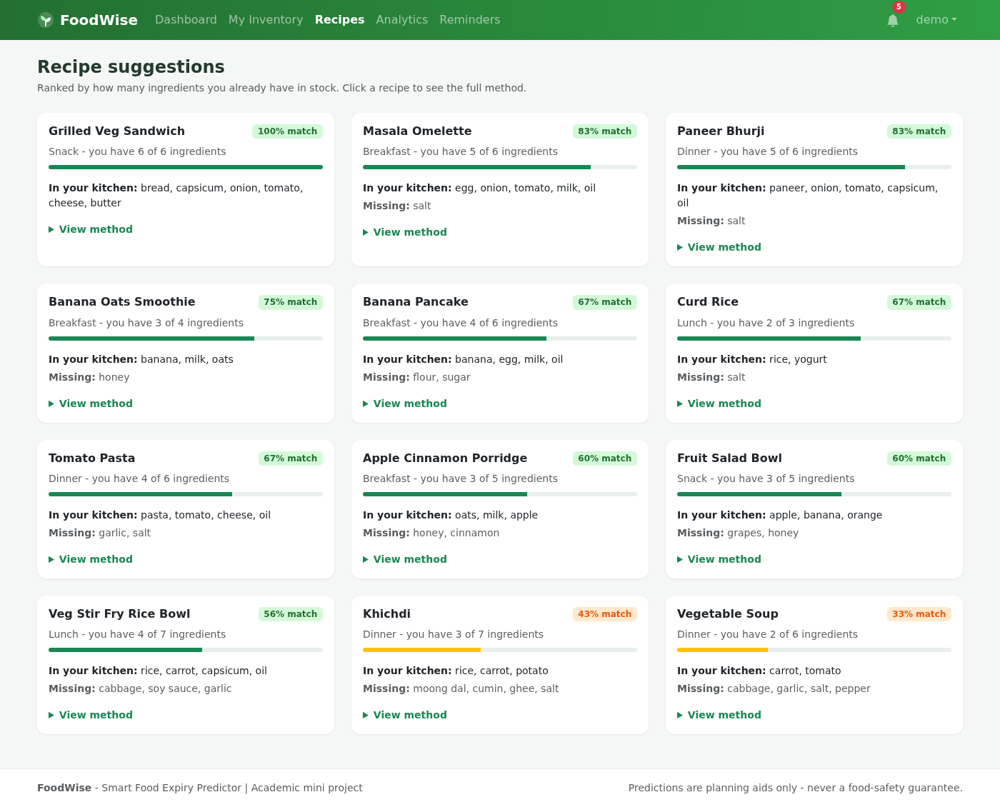
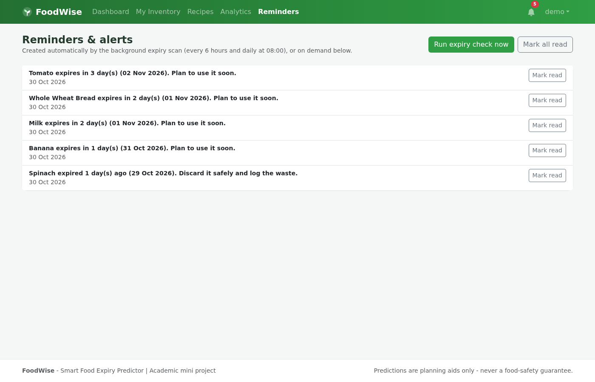
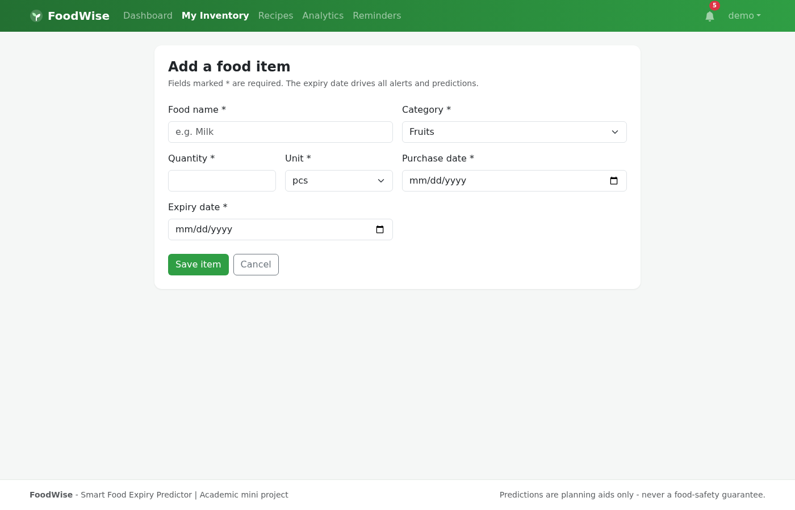
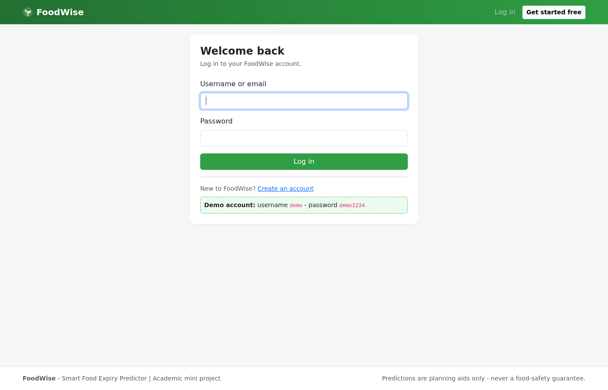
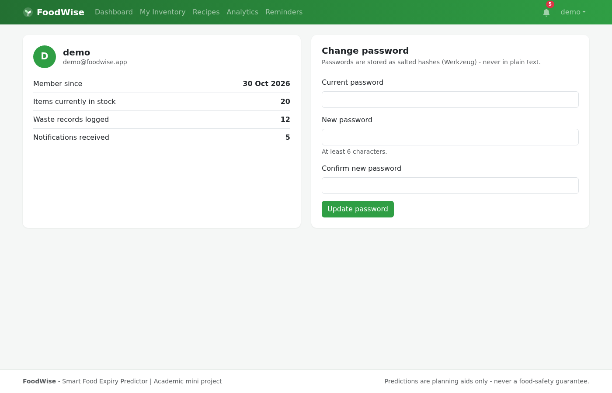

FoodWise tracks what you buy, warns you before it expires, suggests recipes that use what you already have, and learns from your habits to predict which items are most likely to go to waste.
Six modules, one goal: less food waste.
Add every purchase with quantity, category and expiry date. Full CRUD with validation, filters and sorting.
A background scheduler checks every 12 hours and warns 3 days before expiry. Colour-coded: green, orange, red.
Recipes ranked by what is already in your kitchen - ones that use near-expiry ingredients float to the top.
A personal Ridge-regression model predicts which current items are most at risk of being wasted - after 8 honest reports.
Chart.js doughnuts and bars for waste by category, month and reason - computed from real database records only.
Register, log in, and see only your own data. Passwords are salted hashes via Werkzeug + Flask-Login.
Honest by design: no predictions until there is real data.
Captured from the running app with the seeded demo account (ML panel trained).










Three commands after cloning the repository.
git clone https://github.com/abi-techhub/food-wise.git cd food-wise python -m venv venv && source venv/bin/activate pip install -r requirements.txt python seed_demo.py # demo data: demo_user / Demo@123 python app.py # open http://127.0.0.1:5000
Want a live URL? The repo ships with a Procfile and DEPLOY.md - deploy to Render, PythonAnywhere or Railway in minutes.